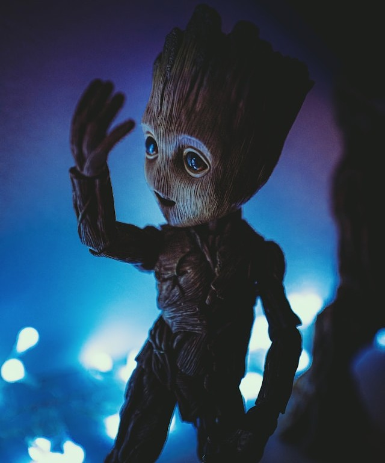

Coursework Links
Tiny Projects:
- Tiny Project 4
- Tiny Project 5
- Tiny Project 6
- Tiny Project 10
- Tiny Project 11
- Tiny Project 12
Do you read reviews about a movie before deciding whether to watch it or not
To be honest, I don't intentionally read reviews before watching a movie unless I come across them on my feed, mostly because my opinion could potentially be heavily different from the point I come across in the reviews. I prefer to watch the movie first, if the trailer catches my interest in going to see it. Though some reviews do influence me to take a look at a movie that I might have otherwise ignored.
Really Boring Fact About Me
I can name comic book characters very fast if you show me images of them, specifically characters from the Marvel and DC Universe.
Modern Slang I Wish Would Go Away
Slang: 6 7
Definition: A form of overused brain rot humor originating from a lyric of the song "Doot Doot (6 7)" by the rapper Skrilla.
Why I Don't Like It: I don't think this needs an explanation, speaks for itself
Recent Article I Liked
Article: 68th Annual GRAMMY Awards Nominees
Why I Liked It: I'm really interested in musical aspects when it comes to pop culture and it's awards season.
Cool Picture I Found on Unsplash.com

Credit: Photo by Jerry Kavan on Unsplash